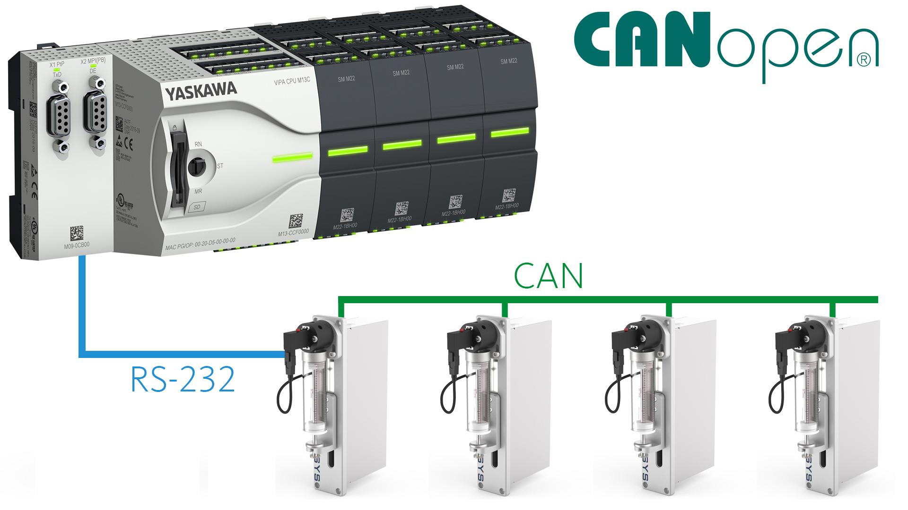

CANopen
CANopen is a high-level communication protocol based on the CAN (Controller Area Network) bus, originally developed for automotive applications. Today, it is widely used in industrial automation, robotics, and embedded systems to provide real-time control and device networking.
CANopen standardizes data structures, device profiles, and communication services, making it easy to integrate devices from multiple vendors.
Key Features of CANopen
- Based on CAN bus, which provides high noise immunity
- Real-time and deterministic communication
- Master–slave or multi-master architecture
- Supports device profiles for standardization (motors, I/O modules, sensors)
- Scalable network: up to 127 nodes per network
- Low wiring cost due to two-wire bus
CANopen Communication Principle
-
CAN Bus
- Physical layer using twisted-pair wiring
- Supports data rates up to 1 Mbps (short distances)
-
CANopen Device Types
- NMT Master: Controls the network (start/stop devices)
- NMT Slave: Controlled devices (VFDs, sensors, actuators)
-
Data Objects
- Process Data Objects (PDOs): For real-time I/O and control
- Service Data Objects (SDOs): For configuration and parameter transfer
- Network Management (NMT): Node control (start, stop, reset)
- Heartbeat / Node Guarding: Device status monitoring
Advantages of CANopen
- High reliability in industrial environments
- Deterministic communication suitable for real-time control
- Standardized device profiles enable interoperability
- Low cost and simple wiring
- Scalable and flexible network
Limitations
- Limited data rate compared to Ethernet-based protocols
- Shorter network distances for higher speeds
- More suited for small to medium networks (not large factory networks)
Typical Applications
- PLC → VFD communication in embedded systems
- Motion control and robotics
- Medical equipment
- Automotive automation
- Industrial sensors and actuators
Working Example - PLC to VFD via CANopen
- PLC acts as CANopen master
- VFD acts as CANopen slave
- PLC sends PDOs to VFD to control motor speed and direction
- VFD sends feedback PDOs to PLC: motor speed, torque, fault status
- SDO communication is used to configure VFD parameters (acceleration, deceleration, torque limits)
Summary Table – CANopen Communication
| Feature | Description |
|---|---|
| Network Type | CAN bus (twisted pair) |
| Max Nodes | 127 per network |
| Data Rate | Up to 1 Mbps |
| Architecture | Master–Slave / Multi-Master |
| Real-Time Data | PDOs |
| Configuration Data | SDOs |
| Applications | Motion control, VFDs, robotics, sensors |